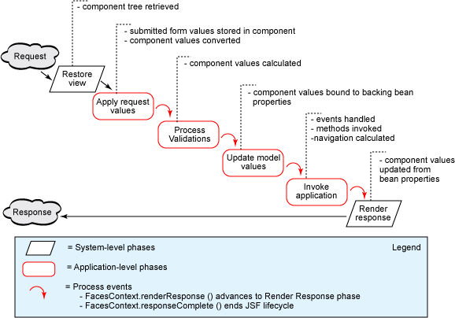
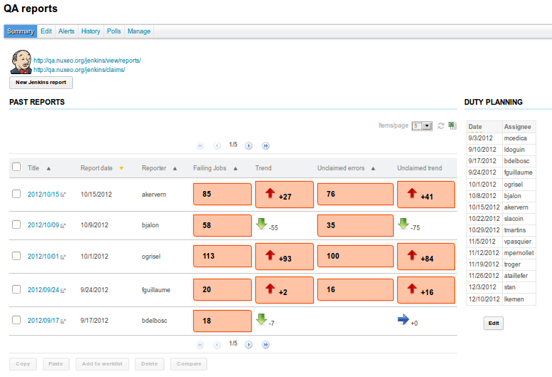
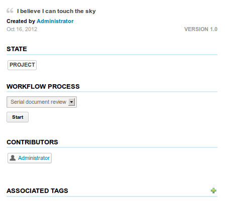

#Nuxeo: Seam & JSF Training
##Technologies Overview
Actors in Nuxeo Web Framework
###Technologies Stack
 ###Sun JSF Facelets
- clean rendering engine for JSF
- provides Expression Language (EL)
- provides a validation model
- provides templating
###Richfaces / Ajax4JSF
- Provides high level components
- file upload
- trees
- tables
- popups
- suggestion boxes
- ...
- Based on Ajax4JSF framework
- provides partial JSF component tree rendering
- provides native Ajax integration
###Seam
- web oriented framework
- natively built for JSF
- provides extended context management
- improves JSF experience
- improves EL
- make bindings simpler
- manage components life cycle
- includes a lot of web tools
###Simple Webapp Stack
###Sun JSF Facelets
- clean rendering engine for JSF
- provides Expression Language (EL)
- provides a validation model
- provides templating
###Richfaces / Ajax4JSF
- Provides high level components
- file upload
- trees
- tables
- popups
- suggestion boxes
- ...
- Based on Ajax4JSF framework
- provides partial JSF component tree rendering
- provides native Ajax integration
###Seam
- web oriented framework
- natively built for JSF
- provides extended context management
- improves JSF experience
- improves EL
- make bindings simpler
- manage components life cycle
- includes a lot of web tools
###Simple Webapp Stack
 ###Complex Webapp Stack
###Complex Webapp Stack
 ##JSF main concepts
##JSF main concepts
Understand the basis of JSF in 5 minutes
### JSF Basics
- JSF is component oriented
- each UI block is a component
- holds state (local value)
- can be bound to a backing bean
- JSF sees a page as a component tree “like the HTML DOM”
- JSF is stateful: component tree holds state
- JSF includes validators and converters
- JSF manages navigation
###Life Cycle & Component Tree
 ###JSF Components Tree
Sample xhtml code:
###JSF Components Tree
Sample xhtml code:
<div>
<h:form>
#{messages['label']}
<h:inputText ... />
<h:commandButton ... />
</h:form>
</div>
- Parse phase → Component tree build phase → application phases (cf. JSF life cycle) → Render phase
- Component tree build phase is executed for each Ajax render phase
###JSF Life Cycle Phases

###JSF Life Cycle: 6 steps
-
Build tree (Restore View) - parses JSP/Facelets and creates component tree
-
Apply request values - parses request and set component tree local values
-
Process validations - apply validators
-
Update model (EL value) - update backing beans
-
Invoke Application (navigation/action) - parses JSP/Facelets and creates component tree
-
Render response (EL value)
Each phase is done for the whole tree before the next phase
### JSF & Facelets
 ### JSF & Facelets
What Facelets provide to JSF:
- Rendering engine
- Templating engine with composition
- Life cycle default view handler
- Dynamic control over component tree construction
- Example: build rendering structures from layouts definitions
###JSF Context Management
JSF defines 4 contexts
- Event context: one http request
- Page context: complete life-cycle
- 2 requests: GET + POST
- Session context: standard http session scope
- Global application context: shared by all user
###JSF Post Back & Context
### JSF & Facelets
What Facelets provide to JSF:
- Rendering engine
- Templating engine with composition
- Life cycle default view handler
- Dynamic control over component tree construction
- Example: build rendering structures from layouts definitions
###JSF Context Management
JSF defines 4 contexts
- Event context: one http request
- Page context: complete life-cycle
- 2 requests: GET + POST
- Session context: standard http session scope
- Global application context: shared by all user
###JSF Post Back & Context
 State is restored when posting a form, and when a validation error occurs
###EL Resolvers
Expression Language offers a loose binding to UI elements
- standard EL resolvers (bean getters & setters, map values by key, list values by index, ...)
- #{myBean.myAttribute} calls myBean.getMyAttribute()
- #{myBean.myAttribute} resolves to myBean.getMyAttribute() on get, and myBean.setMyAttribute(attr) on set
- pluggable EL resolvers, like the DocumentModelResolver
- #{doc.id} calls doc.getId()
- #{doc.dublincore.title} resolves to doc.getPropertyValue("dc:title") on get, and doc.setPropertyValue("dc:title", value) on set
##### Other examples
- #{currentDocument.dublincore.title}
- #{currentDocument.dc.contributors[0]}
###JSF Special Cases
- Cross validation
- problem: need validate before the update model phase
- solution: add a hidden component that retrieves values on other components and validate them
- Ajax interactions
- fine control over behaviour (posting, rerendering,... )
- fine control over validation and update
###Seam Role
- Controller for JSF views
- Seam Components are « by users » (nuxeo services are singletons)
- Injection mechanism for interaction between Seam components
- Context mechanism :
- Current doc/super space ...
- Current tabs
- Caches
- Document view (request)
- CDI inspired from Seam
###Seam Principles
- Seam component
- Pojos or EJB3
- identified by a name (
State is restored when posting a form, and when a validation error occurs
###EL Resolvers
Expression Language offers a loose binding to UI elements
- standard EL resolvers (bean getters & setters, map values by key, list values by index, ...)
- #{myBean.myAttribute} calls myBean.getMyAttribute()
- #{myBean.myAttribute} resolves to myBean.getMyAttribute() on get, and myBean.setMyAttribute(attr) on set
- pluggable EL resolvers, like the DocumentModelResolver
- #{doc.id} calls doc.getId()
- #{doc.dublincore.title} resolves to doc.getPropertyValue("dc:title") on get, and doc.setPropertyValue("dc:title", value) on set
##### Other examples
- #{currentDocument.dublincore.title}
- #{currentDocument.dc.contributors[0]}
###JSF Special Cases
- Cross validation
- problem: need validate before the update model phase
- solution: add a hidden component that retrieves values on other components and validate them
- Ajax interactions
- fine control over behaviour (posting, rerendering,... )
- fine control over validation and update
###Seam Role
- Controller for JSF views
- Seam Components are « by users » (nuxeo services are singletons)
- Injection mechanism for interaction between Seam components
- Context mechanism :
- Current doc/super space ...
- Current tabs
- Caches
- Document view (request)
- CDI inspired from Seam
###Seam Principles
- Seam component
- Pojos or EJB3
- identified by a name (@Name)
- Seam context
- ScopeType: Stateless, Event, Page, Conversation, Session, Application
- Life cycle management: Seam components and outjected values have a scope
###Seam Principles
- Injections (@In)
can ask for injection of named components
- Outjections (@Out, @Factory)
can push components or values in context
- Life cycle call backs
can be notified by seam
- Event system (@Observer)
- Override of existing components (@Install)
###Seam Bean Example
@Scope(ScopeType.CONVERSATION)
@Name("myActions")
public class MyBean implements Serializable {
private static final long serialVersionUID = 1L;
@In(create = true)
protected transient NavigationContext navigationContext;
@In(create = true)
protected transient CoreSession documentManager;
@In(create = true)
protected transient FacesMessages facesMessages;
...
public String myMethod() {
return "A String!";
}
...
public String getMyProperty(){
...
}
###Seam & JSF Binding
- No more XML declaration of backing beans
- JSF components directly access seam context
- JSF uses named components
- Scope is managed by seam annotations
 ###Seam & JSF Life Cycle
###Seam & JSF Life Cycle
 ###Seam & CDI
What Nuxeo uses in Seam has been incorporated into CDI:
- Components binding
- Injections
- Context management
- Events management
- Interceptors
###Global picture
###Seam & CDI
What Nuxeo uses in Seam has been incorporated into CDI:
- Components binding
- Injections
- Context management
- Events management
- Interceptors
###Global picture
 ###Scope management
- User related components are session based
-
###Scope management
- User related components are session based
- currentUser: currently identified user (can be anonymous)
- Stateless components are stateless or event scoped
- selectionActions
- Other components are conversation based: the
application can support multiple parallel conversations
- navigationContext
- documentManager: session to the Nuxeo core repository
###Navigation context
- Seam component named navigationContext
- Provides a central navigation service
- provides context information: currentDocument, currentSuperSpace,...
- manages cache and invalidation events
- provides central points to let all components share navigation related state
- Most components inject the navigationContext
- to know what is the current document
- to perform navigation actions
###Event based invalidation
- Conversation beans hold some cache
- data computed about the currentDocument (relations, history ....)
- Cache invalidation is needed
- Seam Events are used for that: components are notified via @Observers
- Can also use DocumentContextBoundActionBean for optimization
###Seam Delegates in Nuxeo
- Use @Unwrap annotation to access Nuxeo Service as native Seam components
- can access Nuxeo services via injection
- @In CoreSession documentManager
- @In RelationManager relationManager
- Framework.getLocalService can be an alternative for service lookup
###Seam Factories in Nuxeo
Seam factories are used to fill the context
- avoids multiple calls
- avoids managing state in the components
##Nuxeo JSF Integration
What we added to the framework
###Main Concepts
UI Example: Document Management

UI Example: Admin Center

UI Example: Digital Asset Management

Defining xhtml Pages
- JSF xhtml page are contributed by several plugins
- Pages are stored in the
nuxeo.war folder
- The
deployment-fragment.xml file is used to copy
ressources for each bundle
- When overriding an existing template, a
require tag in
the deployment-fragment.xml file is needed to make sure
the page to override is copied before.
<?xml version="1.0"?>
<fragment version="1">
<require>org.nuxeo.ecm.platform.tag.web</require>
<install>
<unzip from="${bundle.fileName}" to="/" prefix="web">
<include>web/nuxeo.war/**</include>
</unzip>
</install>
</fragment>
Defining Seam Components
Only the presence of a file named seam.properties in the bundle jar will
make Seam scan the jar for components.
Layouts & Widgets Role
- Display fields in forms
- Manage edit and view modes for reusability
- Provide validation and feedback
Layouts & Widgets Role
- Display fields in forms
- Manage edit and view modes for reusability
- Provide validation and feedback
Layouts & Widgets Features
- Use JSF/Facelets features
- Benefit from existing JSF libraries (RichFaces)
- Use Expression Language for loose binding to underlying model: a
layout can apply to a document or a bean
Layouts & Widgets in Nuxeo Studio

Layout listing configuration in Studio

Layout listing result in Nuxeo
<layout name="dublincore">
<templates>
<template mode="any">
/layouts/layout_default_template.xhtml
</template>
</templates>
<rows>
<row>
<widget>nature</widget>
</row>
<row>
<widget>subjects</widget>
</row>
</rows>
</layout>
###Nuxeo JSF Tag libraries
Nuxeo provides several tag libraries
- nxu: utility functions (nxu:inputList, nxu:set, nxu:valueHolder)
- nxd: document related functions (nxd:titleOrId(document), etc...)
- nxl: layout/widgets support
- nxdir: directorybound components
Actions
Tab and "Menu" actions

Selection actions

-
Display a button or link to:
- Set current tab
- Navigate to a new view
- Launch "operations"
-
Handle filtering depending on context
- Current user
- Current document
Actions Features
- Handle navigation, provide bookmarkable URLs
-
Filter UI elements
- Check current user permissions using the core security model
- Check current document type, facet, schema, group...
- Use Expression Language for custom conditions
- Adapt rendering depending on configurable options
- Build incremental layouts

Dashboard layout excerpt
###Actions Usage in xhtml Pages
Most of the time, actions rendering depends on their category, although
some improvements have been made in more recent Nuxeo versions.
<nxu:set var="actions" cache="true"
value="#{webActions.getActionsList('DOCUMENT_UPPER_ACTION')}">
<nxu:dataList layout="simple" var="action" value="#{actions}">
<nxh:commandLink action="#{action.getLink()}"
immediate="#{action.immediate}"
onclick="#{action.confirm}">
<h:graphicImage value="#{action.icon}"
rendered="#{not empty action.icon}"
title="#{messages[action.label]}"
alt="#{messages[action.label]}"
styleClass="smallIcon" />
</nxh:commandLink>
</nxu:dataList>
</nxu:set>
###Actions Usage in xhtml Pages
New way (from 5.7.1), allows to mix up different renderings depending on
the action, in the same category:
<nxl:widgetType name="currentDocumentActionsWithForms"
widgetName="documentActionsUpperButtons"
mode="view"
label=""
styleClass="globalActionBar"
subStyleClass="contextActions"
actionStyleClass="button"
actionsDisplay="icons"
overallDisplay="horizontal_block"
category="DOCUMENT_UPPER_ACTION"
maxActionsNumber="5"
value="#{currentDocument}" />
###URL Service
- JSF uses POSTs everywhere
- urls are not bookmarkable
- Nuxeo adds an URL service
- let define URL codecs
- define what must be encoded in urls
- Document Uid based urls
- Document Path based urls
- File download urls
- ...
- provides RESTful (GET) navigation in JSF
- simple navigation in Nuxeo is done via simple GET
###URL Codecs
- URL Codecs
- Transform an url into a « document view »
- Restore context from this « document view » and map additional parameters
- Examples:
- http://localhost:8080/nuxeo/nxdoc/default/fa431bc8-014d-4d19-9338-216d732ae5b2/view_documents
- http://localhost:8080/nuxeo/nxpath/default/default-domain/workspaces@view_documents
- http://localhost:8080/nuxeo/nxfile/default/5003772a-27c8-4231-a5d5-7d19608fbfb7/blobholder:0/Screenshot%20at%202013-06-25%2000%3A11%3A35.png
- As a service because it has to be accessible by:
- core services (example: notifications)
- other frameworks (example: opensocial gadgets)
###URL Patterns
URL patterns make the link between the navigation and the URL codec
<extension target="org.nuxeo.ecm.platform.ui.web.rest.URLService"
point="urlpatterns">
<urlPattern name="default" enabled="true">
<defaultURLPolicy>true</defaultURLPolicy>
<needBaseURL>true</needBaseURL>
[...]
<codecName>docpath</codecName>
<actionBinding>
#{restHelper.initContextFromRestRequest}
</actionBinding>
[...]
<bindings>
<binding name="tabId" callGetter="false">
#{webActions.currentTabId}
</binding>
</bindings>
</urlPattern>
</extension>
Themes Role
- Define the branding of an application
- Define global page layouts with reusable components
- Handle CSS/Javascript resources
Themes Features
- Use JSF and Freemarker features
- Define sets of reusable CSS files to handle addons and applications
- Provide flavors for easier customization
Branding in Nuxeo Studio
- Customize login page
- Define flavors
###Theme XML Extensions
- declare the theme
- reference the page layout, referencing view fragments
- link CSS/JS resources
- apply flavours
Content Views
- Define the query to retrieve documents (or other resources)
- Pass on contextual parameters to the query
- Define a filtering form
- Define rendering of items in a table
- Handle selection and actions on items
- Handle sorting and pagination
- Handle cache
Content Views Features
- Reuse underlying layouts and actions features
- Accept pluggable page providers to query custom databases
- Benefit from loose binding of listing layouts
- Pass contextual properties to the page provider (core session for instance)
###Content Views Definitions
<extension target="org.nuxeo.ecm.platform.ui.web.ContentViewService"
point="contentViews">
<contentView name="document_content">
<coreQueryPageProvider>
[...]
</coreQueryPageProvider>
<searchLayout name="document_content_filter"
filterDisplayType="quick" />
<refresh>
<event>documentChanged</event>
<event>documentChildrenChanged</event>
</refresh>
<cacheKey>#{currentDocument.id}</cacheKey>
<cacheSize>10</cacheSize>
<resultLayouts>
<layout
name="document_listing_ajax"
title="document_listing"
translateTitle="true"
iconPath="/icons/document_listing_icon.png"
showCSVExport="true"
showPDFExport="false"
showSyndicationLinks="true" />
</resultLayouts>
<selectionList>CURRENT_SELECTION</selectionList>
<actions category="CURRENT_SELECTION_LIST" />
</contentView>
</extension>
###Page Providers Definitions
<coreQueryPageProvider>
<property name="coreSession">#{documentManager}</property>
<property name="maxResults">DEFAULT_NAVIGATION_RESULTS</property>
<whereClause docType="AdvancedSearch">
<predicate parameter="ecm:fulltext" operator="FULLTEXT">
<field schema="advanced_search" name="fulltext_all" />
</predicate>
<predicate parameter="dc:title" operator="FULLTEXT">
<field schema="advanced_search" name="title" />
</predicate>
<predicate parameter="dc:modified" operator="BETWEEN">
<field schema="advanced_search" name="modified_min" />
<field schema="advanced_search" name="modified_max" />
</predicate>
<fixedPart>
ecm:parentId = ? AND ecm:isCheckedInVersion = 0
AND ecm:mixinType != 'HiddenInNavigation'
AND ecm:currentLifeCycleState != 'deleted'
</fixedPart>
</whereClause>
<parameter>#{currentDocument.id}</parameter>
<sort column="dc:title" ascending="true" />
<pageSize>20</pageSize>
</coreQueryPageProvider>
###Custom page providers
Benefit from:
- default page providers API (next, prev, etc...)
- default content views rendering
- use layouts loose binding for results rendering
<extension
target="org.nuxeo.ecm.platform.query.api.PageProviderService"
point="providers">
<genericPageProvider
class="org.nuxeo.ecm.platform.audit.api.document.DocumentHistoryPageProvider"
name="DOCUMENT_HISTORY_PROVIDER">
<whereClause docType="BasicAuditSearch">
<predicate parameter="log.eventDate" operator="BETWEEN">
<field schema="basicauditsearch" name="startDate" />
<field schema="basicauditsearch" name="endDate" />
</predicate>
</whereClause>
<sort column="log.eventDate" ascending="true" />
<sort column="log.id" ascending="true" />
<pageSize>10</pageSize>
</genericPageProvider>
</extension>
###Content Views usage in xhtml pages
<nxu:set var="contentViewId" value="unique_cv_id">
<nxu:set var="contentViewName" value="document_content">
<ui:decorate template="/incl/content_view.xhtml" />
</nxu:set>
</nxu:set>
### JSF pitfalls
- Building a JSF component from the ground:
- is a lot of work
- can be hard
=> Use facelets and composition to build new custom components
- Rendered clause impact on performance
- Variables exposure: build time vs render time
- Duplicate id issues
- Ajax and queues and re-render zones
- Back button management
- Server side state saving (limited by memory usage)
- ...
### JSF rendered clause issue
- JSF rendered clause is evaluated during each phase
- clause is evaluated 6 time per components
- Associated with a loops this can completely kill the performances of an application
###Render clause problem
 ###Render clause solution
- Use built-time conditions
- c:if, c:choose, c:forEach
- Bind conditions to context variables
- use Seam factories to compute variable only once per event
- use nxu:set tag with cache property to "true"
###Seam components design advice
- It's easy to put all logic in the Seam beans (seam book push in that direction)
but it's bad
- because the code is hard to test
- because the code is not reusable
- because it's gives packaging constraints
=> Separate UI/Logic/Storage layers
xxx-api, xxx-core, xxx-web
### Seam pitfalls
- Scope management
- do not use conversation scope too much
- same for session components
- conversation and session calls are synchronized
- Circular dependencies between Seam components
- Interceptors overhead: can be useful to bypass them
### Nuxeo pitfalls
- Nuxeo and ELs
- JSF/Seam EL for layouts & widgets
- JEXL for actions with a restricted context
- MVEL for operations
- Override of default templates or Seam components: not advised for easier migration
### Debugging & Troubleshoot
- use the dev mode for refresh of xhtml templates
- use Nuxeo IDE for Seam hot reload support and debugging features
### Training exercise 1: define a new view
The server currently needs to be started in dev mode for the exercise
to complete correctly when using Nuxepo IDE. Edit the
###Render clause solution
- Use built-time conditions
- c:if, c:choose, c:forEach
- Bind conditions to context variables
- use Seam factories to compute variable only once per event
- use nxu:set tag with cache property to "true"
###Seam components design advice
- It's easy to put all logic in the Seam beans (seam book push in that direction)
but it's bad
- because the code is hard to test
- because the code is not reusable
- because it's gives packaging constraints
=> Separate UI/Logic/Storage layers
xxx-api, xxx-core, xxx-web
### Seam pitfalls
- Scope management
- do not use conversation scope too much
- same for session components
- conversation and session calls are synchronized
- Circular dependencies between Seam components
- Interceptors overhead: can be useful to bypass them
### Nuxeo pitfalls
- Nuxeo and ELs
- JSF/Seam EL for layouts & widgets
- JEXL for actions with a restricted context
- MVEL for operations
- Override of default templates or Seam components: not advised for easier migration
### Debugging & Troubleshoot
- use the dev mode for refresh of xhtml templates
- use Nuxeo IDE for Seam hot reload support and debugging features
### Training exercise 1: define a new view
The server currently needs to be started in dev mode for the exercise
to complete correctly when using Nuxepo IDE. Edit the bin/nuxeo-sdk.conf file
in you sdk to set the org.nuxeo.dev property to true.
- Define a new JSF view
- define the template with a simple "Hello World" content
- define the navigation case
- add an action displaying it
- display the current document default view layout
- bind the view to the default theme
- bind the view to another theme page
### Help (1/5)!  Sample template content, at
Sample template content, at src/main/resources/web/nuxeo.war/hello_world.xhtml
<div>Hello</div>
Sample navigation case at src/main/resources/OSGI-INF/deployment-fragment.xml
<extension target="faces-config#NAVIGATION">
<navigation-case>
<from-outcome>hello_world</from-outcome>
<to-view-id>/hello_world.xhtml</to-view-id>
<redirect />
</navigation-case>
</extension>
### Help (2/5)!
Sample action contribution at src/main/resources/OSGI-INF/extensions/hello-action-contrib.xml
<?xml version="1.0"?>
<component name="helloAction">
<extension target="org.nuxeo.ecm.platform.actions.ActionService"
point="actions">
<action id="hello" link="hello_world" label="Hellowho">
<category>SUBVIEW_UPPER_LIST</category>
<filter-id>helloFilter</filter-id>
</action>
</extension>
<extension target="org.nuxeo.ecm.platform.actions.ActionService"
point="filters">
<filter id="helloFilter">
<rule grant="true">
<type>Workspace</type>
</rule>
</filter>
</extension>
</component>
### Help (3/5)!
Add the document view layout to src/main/resources/web/nuxeo.war/hello_world.xhtml
<div xmlns:nxl="http://nuxeo.org/nxforms/layout">
<nxl:documentLayout mode="view" value="#{currentDocument}" />
</div>
### Help (3/5)!
Add the theme configuration to src/main/resources/web/nuxeo.war/hello_world.xhtml:
<!DOCTYPE html PUBLIC "-//W3C//DTD XHTML 1.0 Transitional//EN"
"http://www.w3.org/TR/xhtml1/DTD/xhtml1-transitional.dtd">
<nxthemes:composition
xmlns:ui="http://java.sun.com/jsf/facelets"
xmlns:nxthemes="http://nuxeo.org/nxthemes"
xmlns:nxl="http://nuxeo.org/nxforms/layout">
<ui:define name="page title">
Hello!
</ui:define>
<ui:define name="body">
<div>
Hello world
<nxl:documentLayout
mode="view"
value="#{currentDocument}" />
</div>
</ui:define>
</nxthemes:composition>
### Help (5/5)!
Sample theme contribution at src/main/resources/OSGI-INF/extensions/hello-theme-contrib.xml
<extension target="org.nuxeo.theme.services.ThemeService"
point="applications">
<application root="${org.nuxeo.ecm.contextPath}"
template-engine="jsf-facelets">
<view id="/hello_world.xhtml">
<theme>galaxy/popup</theme>
</view>
</application>
</extension>
### Training exercise 2: define a new widget type
- Define a widget template
- Define the widget type
- Use this widget type in a layout
### Training exercise 3: define a new tab
- Define a new tab on documents
- define the tab content
- define an action displaying this tab
- refine the filter controlling this tab appearance
←
→
/
#